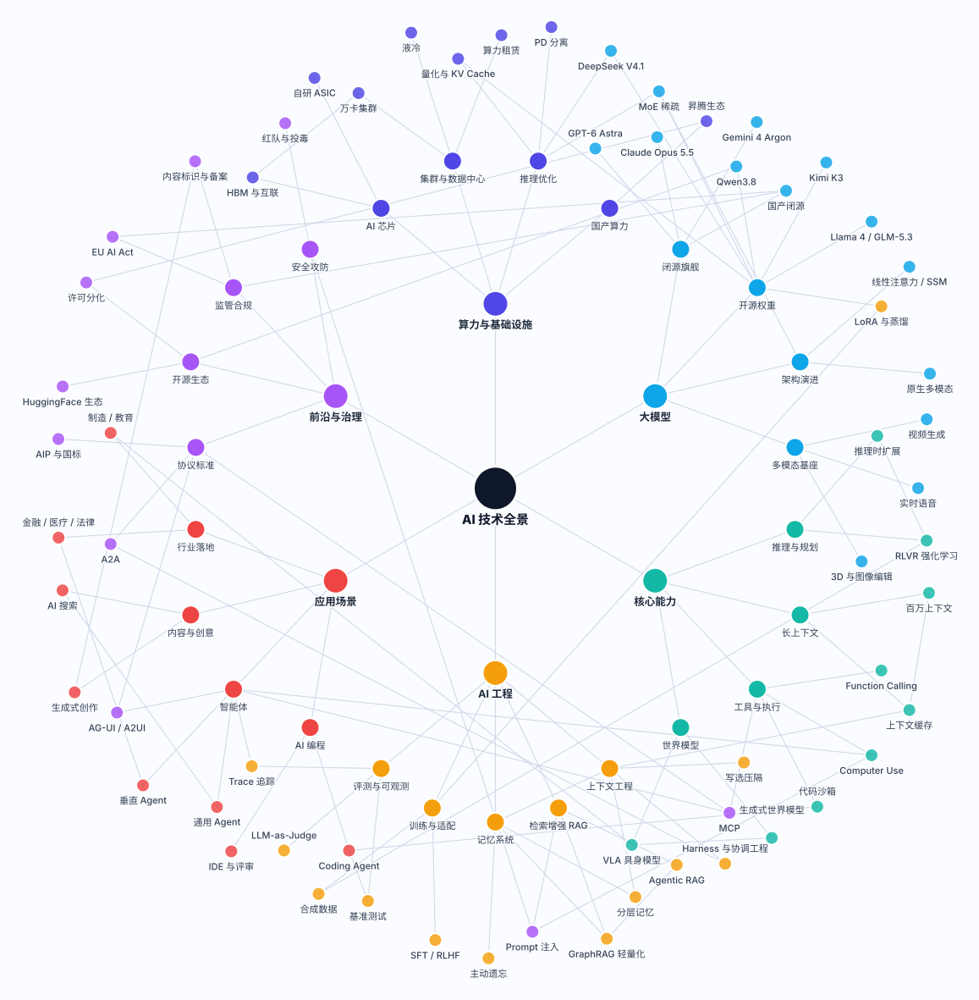

模型会换,层不会换。真正天天出事的,是层和层之间那道缝。
这篇不是"2026 年 AI 圈又出了什么"的盘点。我想干的事更简单:把 AI 技术栈拆成六层,聊聊每层最可能在生产上坏在哪儿,以及我们在那一层能抓住点什么。结构上的判断不依赖任何市场数据;引用的标准和法规都核到了原文,链接在文末。
一、为什么还要再画一张全景图
2023 年大家聊 AI,基本是围着模型转:谁参数大、谁榜单高、谁上下文长。到 2026 年,这套说法有点不够用了。
价值重心往两头跑了——一头是算力和推理成本,一头是智能体的工程化落地。中间那层"模型"当然还重要,但它越来越像一种可以替换的依赖:像数据库、像消息队列、像 CDN。
而所有可以替换的依赖,最后都会以同一种方式出现在运维的工作台上——版本、容量、配额、灰度、回滚。今年不少团队做的最重要的一次架构决定,其实不是"选哪个模型",而是"怎么让模型能换"。
所以这张图不是为了列全。列全是列不全的,半年就过期。
它真正有用的是标出接缝——层和层之间的接口,那才是事故真正发生的地方。

二、六层结构:一张表看完
先把骨架立起来。下面这张表,从左到右是三件事:这层在管什么、它最典型的坏法、以及你在那一层能抓住什么。
| 层 | 这层在管什么 | 最典型的坏法 | 你在那一层能抓住什么 |
|---|---|---|---|
| 基础层 | 芯片、集群、电力、网络、推理优化 | 集群利用率上不去;规模一大,硬件故障就是常态 | 容量与配额、利用率、故障自愈、检查点 |
| 模型层 | 权重、版本、推理服务、模型路由 | 版本静默漂移,线上表现和评测时不是同一个东西 | 版本固定、灰度、路由与回退 |
| 能力层 | 推理与规划、工具调用、上下文、代码沙箱 | 能力"看起来有",一进生产就跑不通 | 超时、预算、降级、能力探测 |
| 工程层 | 编排、记忆、检索、评测、可观测 | 跑得通,但说不清为什么通,也说不清为什么不通 | Trace 回放、评测集、成本归因 |
| 应用层 | 面向用户的流程与界面 | 权限过大、误操作、影响面失控 | 沙箱、最小权限、人工审批 |
| 前沿与治理 | 协议标准、合规、安全攻防 | 上线三个月后,才发现自己不合规 | 审计留痕、内容标识、红队 |
如果只记一句话,我记的是这句:
下层决定上限,上层决定体验,接缝决定事故。
有点口号,但确实好用。评审架构的时候照着念一遍,能问出不少问题来。
三、2026 年的三个结构性变化
这节只聊结构,不报数字。数字会过期,结构不会。
1. 训练是一次性投入,推理是每天的账
训练花钱是一次性的,推理花钱是持续的。等调用量上去,优化的对象就变了:
- 从"怎么把模型训出来",变成"怎么让每次调用便宜一点";
- 量化、KV Cache 复用、PD 分离(把预填充和解码拆到不同资源池),这些原来算省钱小技巧,现在得当成架构选型来讨论;
- 成本从财务科目变成运维指标——延迟、吞吐、每千 token 多少钱,最好能在同一块面板上看。
对运维来说这个变化挺直接的:你要看的东西,从"服务活着没"扩展到"这次调用值不值"。再往下走是成本归因,再深一点就是我们在静默失败那篇里写的那些"不报错但很贵"的情况。
2. 标准还在动,现在写死的字段以后要还债
AI 可观测性这两年最大的工程风险,不是"没有标准",是"标准在动"。
OpenTelemetry 的 GenAI 语义约定,2026 年 5 月从主仓库拆出来单独维护了[1],到 10 月还在高频改,连 schema URL 都还挂着待定。这意味着:
今天写死的字段名,明天可能就是历史包袱。
所以我们的做法是:语义跟着标准走,实现要能换。
trace 的语义模型——一次 inference、一次 tool call、一次 agent invocation 分别长什么样——建在 OpenTelemetry 的约定上;各家的 SDK、各家的平台,都当可替换的适配层。反过来做,让某家平台的私有字段成了唯一真相,那换平台那天,埋点就得重写一遍。
这也是我们在读懂一条 Agent Trace里反复念的一句:先对齐语义,再挑工具。
3. MCP 把"Agent 能干什么"搬进了协议
MCP 在 2026 年的角色,已经不只是"给模型接工具"了。
2026-07-28 那版规范里,除了核心的 resources / prompts / tools,还正式带了几个扩展[2]:
- Tasks——长任务异步跑,支持轮询、中途补输入、持久句柄;
- Skills over MCP——结构化的作业指导通过协议分发,不用再往 system prompt 里塞;
- MCP Apps——对话里直接内联渲染交互界面。
三件事加起来,等于把"Agent 到底能干什么"从提示词里搬到了协议里。搬到协议里之后,运维对象就变了:
MCP Gateway 变成了新的 API 网关。鉴权、限流、配额、审计,该收在这一层做,而不是在每个 Agent 里各写一遍。
这是好事——"Agent 的接入治理"终于有了一个能标准化、能集中运维的位置。也是麻烦事——又多了一个必须自己运维的中间件。
四、逐层拆:每层最先坏的地方
下面六节,每节只回答一个问题:这一层在生产上,最先坏的是什么。
1. 基础层:贵的不只是卡,还有电和网
规模到了万卡量级,约束条件会换一批。芯片是一层,但更硬的往往是供电、散热、互联带宽,还有有效算力利用率。
落到工程上有两个后果:
- 硬件故障变成常态。集群一大,"有卡在坏"就是稳态。检查点、弹性训练、故障自愈不是加分项,是入场券。
- 利用率成了核心指标。卡闲着和卡坏了,在财务上是同一件事。液冷、网络拓扑、调度策略,最后都折算成这一个数。
多数团队不会自建这一层,但账得会算:租赁价格怎么走、预留和按需怎么配、训练任务该放哪个池子。
2. 模型层:最不靠谱的信息是型号名
这篇我刻意不写具体型号。
原因挺实际的:型号名的保质期太短。一个模型从发布到被下一个版本盖过去,可能就几个月;写死了型号的文章,半年后会变成"看起来不太专业"的证据。更麻烦的是,型号一旦写错,读者对整篇的信任会一起没了。
运维上真正需要的是能力档位,不是型号:
| 档位 | 用途 | 关键约束 |
|---|---|---|
| 强推理档 | 复杂规划、多步任务、代码重构 | 单价高、延迟长,必须设预算上限 |
| 快响应档 | 分类、抽取、路由、对话主循环 | 稳定性优先,可以接受能力略降 |
| 低成本档 | 批处理、离线摘要、数据清洗 | 吞吐优先,可以排队 |
| 私有化档 | 数据不出域的场景 | 拿能力换合规,要接受代差 |
路由按档位走,型号随时能换。然后三件事得做:版本固定、灰度、回退。
模型升级应该跟代码发版走同一套流程——有评审、有灰度比例、有一键回退。而不是运维手动改个环境变量,第二天发现线上说话风格全变了,还没人知道是哪次改的。
3. 能力层:能力不等于能用
"支持工具调用"和"在你的业务里可靠地调用工具",是两件事。前者是文档里的一个勾,后者得靠工程堆出来:
- 超时和重试——工具会慢、会失败、会返回垃圾。没有超时的 Agent,就是一个会永久挂起的进程;
- 幂等——重试的前提是被调的那边扛得住重复,写操作尤其;
- 预算闸门——单次运行的 token 和费用上限。没有这个,一个循环就能把当月预算烧完;
- 降级路径——强模型不可用时退到什么,工具不可用时退到什么。
长上下文也一样:塞得进去,不等于用得上。百万级上下文的单价和延迟曲线,通常会让"全塞进去"变成最贵的那种选择。该压就压,该检索就检索——这是第一篇里提过的"写、选、压、隔"。
4. 工程层:那次运行还能不能放一遍
这层是本站的主线,不展开,只给一个判断标准:
出了事,你能不能把那次运行原样放一遍?
能放,说明你至少有:完整的 trace、每步的输入输出、工具调用的参数和返回、token 和延迟、模型版本。不能放,你手上就只有一堆日志,和一句"用户说不对"。
顺便说评测。很多人把评测当成上线前的关卡,其实它更大的价值在线上——用 LLM-as-a-Judge 对真实流量持续打分,你才有了一条"质量"的时间序列,而不是只有"错误率"这一条。那篇讲得比较细。
5. 应用层:Coding Agent 先跑通,因为结果好验证
为什么编程是第一个规模化落地的场景?
不是因为模型最会写代码,是因为代码能编译、能跑测试、能被 review。反馈闭环最短,验证成本最低,错了立刻知道。
这对别的行业是个挺硬的提示:想让 Agent 落地,先想办法让"对错"能判定。如果一件事连人都说不清对不对,Agent 做得再好也没人敢用。
这一层能抓的东西很具体:代码沙箱(必须有,不是可选)、最小权限(能读的别给写)、变更前的人工审批。
6. 前沿与治理:合规最后落在数据管道上,不在法务
先看两个日期:
- 欧盟 AI Act:2026 年 8 月 2 日主体条款开始适用(已经过去了);2026 年 12 月 2 日是合成内容标识(第 50 条第 2 款)的合规节点[3]。
- 中国:《人工智能生成合成内容标识办法》2025 年 9 月 1 日起施行,要求显式标识和隐式标识,配套的强制性国标同步实施[4]。
这两件事看着是法务的活儿,其实不是。它们最后都落在一个很工程的问题上:
你有没有留痕?
具体到系统里,就是这些字段必须在 trace 里:谁发起的、什么时候、哪个模型哪个版本、经过哪些工具、内容是不是生成的、有没有人改过。这些字段一旦不在采集链路里,事后补不出来——你不可能三个月后回头重建当时那一次调用。
安全侧也一样。提示注入长期排在 LLM 应用风险清单第一位[5],它本质上是"不可信输入进了可信上下文"。工程解法不是过滤关键词,是最小权限加人在回路——让被注入的 Agent 也干不了危险的事。
五、三条明天就能用的建议
这三条都不新鲜,是我们自己踩过之后写下来的。
1. 架构评审加一张"接缝清单"
六层之间有五个关键接缝。每个接缝问三个问题:接口谁定的?变了谁通知?坏了谁兜底?
| 接缝 | 典型接口 | 变更时最容易出的问题 |
|---|---|---|
| 基础 ↔ 模型 | 推理服务 API | 并发一上来,显存打满、排队雪崩 |
| 模型 ↔ 能力 | 上下文窗口、工具 schema | 换模型后工具调用格式变了,静默失败 |
| 能力 ↔ 工程 | trace 语义 | 换 SDK 丢字段,历史数据接不上 |
| 工程 ↔ 应用 | 状态与检查点 | 长任务中断,无法恢复,只能重跑 |
| 应用 ↔ 治理 | 审计日志 | 事后无法举证,也说不清是谁改的 |
这张表不用填满,能填的填上,填不上的就是风险点。比开一场"我们的 AI 战略"讨论会有用得多。
2. 可观测性先于功能
不是"先上线再补监控",是:一个功能如果没法回放,它就不算做完。
这条在 Agent 场景比在微服务场景更硬。微服务的失败通常吵——错误率上去了,延迟飙了,告警响了。Agent 的失败常常很安静:回答得很流畅,但内容是错的;任务"完成"了,但结果不对。三大支柱那篇讲的,就是怎么把"安静"变成"看得见"。
3. 把模型当可替换依赖
三件套,缺一不可:
- 路由层——按能力档位调,业务代码里不写模型名;
- 评测集——换模型之前先跑一遍,用数据说话,别靠手感;
- 回退开关——一个配置切回上个版本,分钟级生效。
这三件做到,"换模型"就从一个要立项的事,变成一次常规变更。
六、结语:盯住那道缝
模型会换,层不会换。
2026 年的 AI 技术栈,六层骨架已经稳了。真正在变的是每层内部怎么实现,和层跟层之间的接口。
对做运维的人来说,这其实是好消息:你不用追每个新模型,盯住接缝就够了——接口定没定、变更通不通知、坏了有没有兜底。
最后说清楚这篇的边界。六层结构、以及"每层最先坏的地方",都是工程判断,不是市场数据;引用的标准和法规都核到了原文,链接在下面;具体的型号、版本号、价格我一个都没写——它们会过期,写错代价也高。图谱里的节点会一直更新,文章的结构不会,两边万一打架,以文章为准。
反正这张图我自己也不敢说全对,过半年多半得改。你要是发现哪一层已经不对了,跟我说一声,咱们一起改过来。